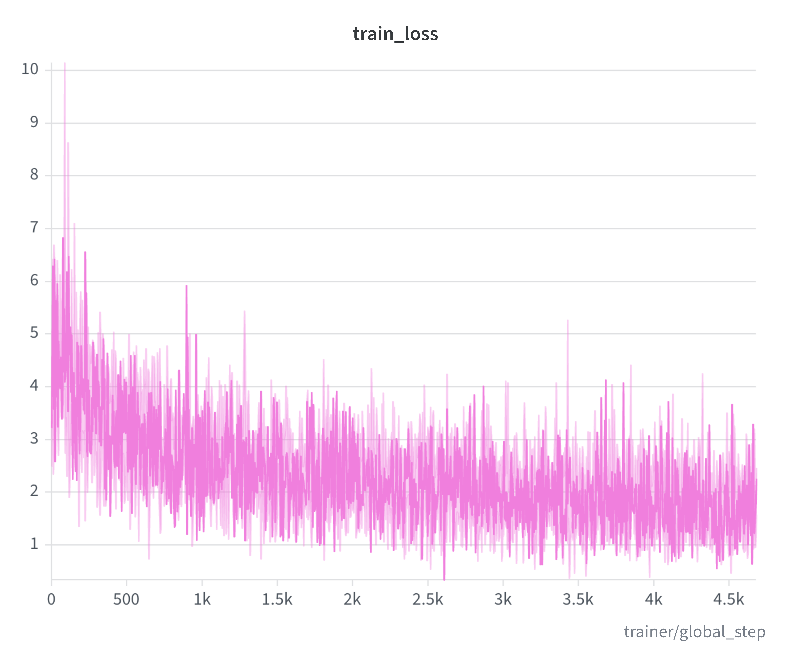
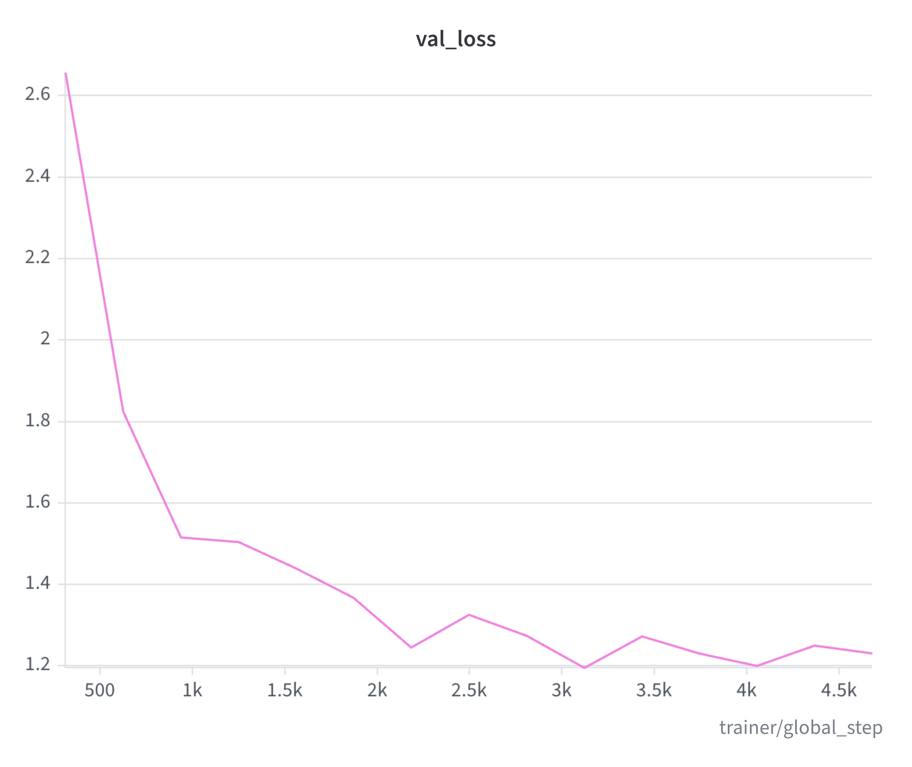
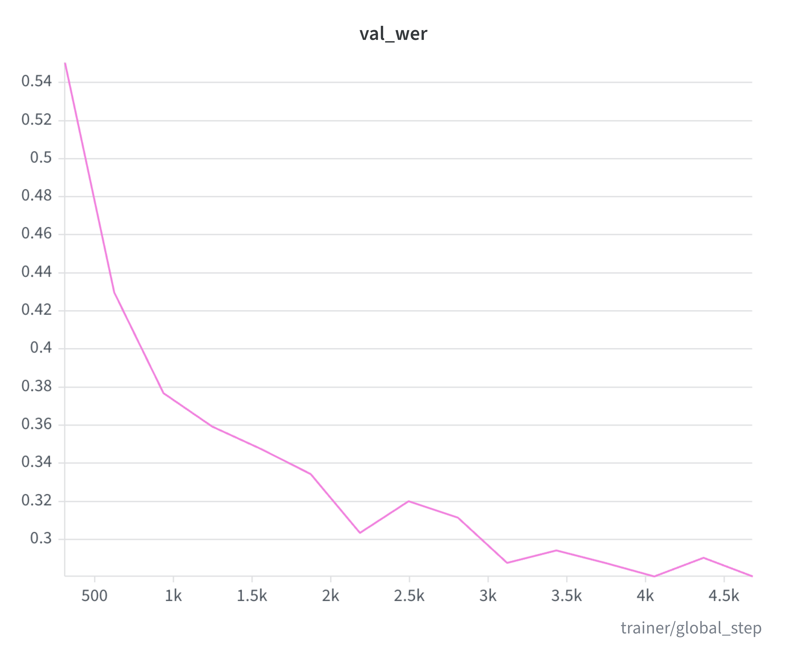

Nigerian English is one of the most widely spoken English varieties in Africa, yet it is almost absent from the data that modern speech recognisers learn from. Most public ASR corpora are dominated by North American and British speakers, so recognition quality drops as soon as a speaker’s accent, rhythm, or vocabulary departs from those norms. This project addresses that gap directly: a curated, transcribed corpus of Nigerian-English conversational speech, paired with a complete fine-tuning pipeline for NVIDIA’s FastConformer CTC acoustic model, built with NeMo on Google Colab.
The work covers the entire lifecycle rather than a single training script — dataset conversion and manifest generation, a corpus-specific tokenizer, a from-scratch baseline that was diagnosed when it failed, fine-tuning of a pretrained model, experiment tracking with Weights & Biases, and publication of the resulting checkpoint to the Hugging Face Hub. The sections below walk through each stage, including the failure, because the failure is part of the engineering story.
The Dataset
The corpus is Alpha-Proxima/combined-audio, a privately hosted Hugging Face dataset of 1,608 transcribed Nigerian-English utterances, each with text and duration metadata. It is split 80/20 into training and validation sets with a fixed seed (42), so every experiment sees the same held-out speakers. A custom converter turns each Hugging Face sample into a WAV file plus a NeMo JSONL manifest entry (audio_filepath, duration, text). NeMo’s duration filtering then removes clips outside the configured bounds, leaving 1,245 files (2.90 hours) of training audio and 315 files (0.74 hours) for validation.
A SentencePiece BPE tokenizer with a 512-token vocabulary is built from the transcript corpus using NeMo’s process_asr_text_tokenizer.py. Learning the subword units from the data itself means Nigerian-English surface forms and conversational patterns are represented directly, instead of being forced through a vocabulary shaped by North American or British text.
The Baseline That Failed
The first attempt trained a from-scratch EncDecCTCModelBPE in the FastConformer-CTC-BPE configuration — 115 M trainable parameters — using the custom tokenizer. It never converged. Validation WER stayed pinned at 100%, and the model emitted empty predictions for every validation utterance: a failure that is easy to mistake for a metrics bug but is really a training-signal problem.
The notebook documents the diagnosis rather than hiding it. The main suspects were a 128-token vocabulary from an earlier tokenizer build that was too small for the corpus’s linguistic diversity, an undertrained model, learning-rate and optimisation settings, and data-quality checks on the audio and transcriptions. Each came with a concrete remedy: a larger vocabulary (the final tokenizer uses 512 tokens), a pretrained initialisation, and a longer, better-scheduled run.
The Fine-Tuning Recipe
The working model starts from the NGC pretrained stt_en_fastconformer_ctc_large checkpoint instead of random weights. Fine-tuning runs through PyTorch Lightning and NeMo’s experiment manager: batch size 4, AdamW with a learning rate of 5e-4 and weight decay of 0.001, cosine annealing with 2,000 warmup steps, SpecAugment, and 16-bit mixed precision on a single Colab GPU. Checkpoints are selected by minimum validation WER, training stops early after three epochs without improvement, and every run is logged to Weights & Biases (project naija_en_asr) so the curves and metrics are reproducible.
Results
Validation WER fell from 55.1% at epoch 0 to 28.1% at epoch 12, improving at every saved checkpoint (0.551 → 0.430 → 0.377 → 0.360 → 0.348 → 0.334 → 0.304 → 0.288 → 0.281); training stopped after 15 epochs. The learning curves tell the same story: training loss falls steadily, validation loss follows without diverging, and validation WER drops in steps as the model locks onto the accent.

Training loss across the fine-tuning run.

Validation loss at each evaluation step.

Validation WER per evaluation step — the headline curve.
The numbers need context. A 28% word error rate on spontaneous, conversational speech is a substantial improvement over 55% and a workable starting point for a low-resource accent, but it is not production-grade. The corpus is small for ASR (about 3.6 hours in total), the validation set is smaller still, and 15 epochs leaves room for more training with a larger corpus.
REF: thank you so much that is it they my friends please thank you god please how can i locate
PRED: so much that is it my friends please thank you god please how can i locate
REF: dad the funny part of it is that when i offered to give them money to buy something
PRED: that funy pa of if you when i start to give you money to buy something
Reference/hypothesis pairs copied verbatim from the NeMo validation log, lowercased and punctuated as logged; spontaneous speech still produces word errors.
From Notebook to Shared Model
The best checkpoint — a 463 MB NeMo archive — was pushed to the Hugging Face Hub as oegbo/fastconformer_enng, then reloaded from the Hub and fine-tuned for two more epochs to verify that the published artifact works end to end. The Colab notebook is kept alongside it as the reproducible record of the full pipeline, from manifest generation to training curves.
What I’d Do Next
The next steps are mostly about data and decoding. On data: the corpus is roughly 3.6 hours in total, which is small for ASR, and adding speakers, hours, and regional variety — including code-switched speech — while keeping validation speaker-disjoint would likely matter more than any hyperparameter change. On decoding: the CTC model currently uses its built-in decoder; a beam-search decoder with an external n-gram or neural language model is the standard next lever for WER, especially on conversational speech.
On methods: a controlled comparison against a Whisper model fine-tuned on the same corpus would show whether FastConformer is the right architecture for this accent, and a hyperparameter sweep over learning rate, warmup, and SpecAugment strength would firm up the recipe. Finally, publishing the manifest generation and split so others can reproduce the exact 1,245/315-clip partitions would make the benchmark reusable.